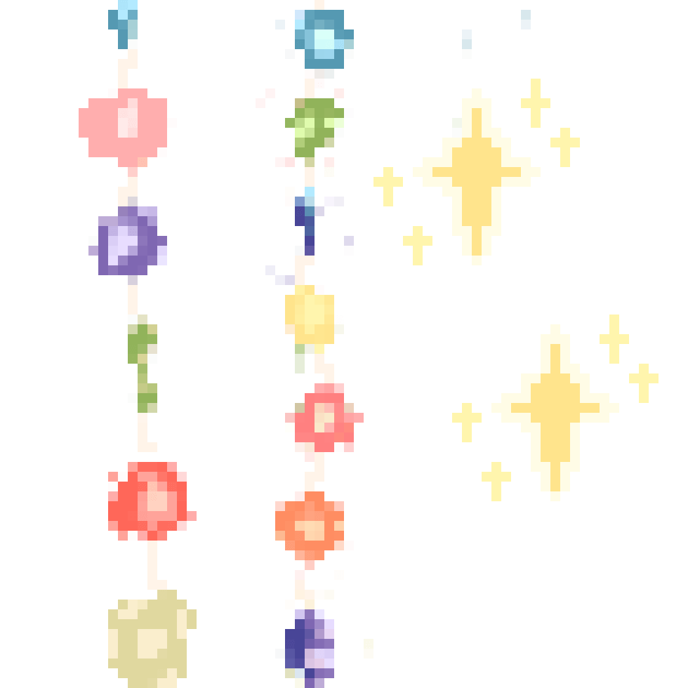

sabrin's bookmarks･ﾟ✧
favorite links and corners of the internets :*:･ﾟ’☆
the most enjoyable part of my web re-discovery journey is finding a ton of super cool websites of all different kinds and genres to explore. up until now, i've mostly just been hoarding them on my bookmarks bar, but i also want to have a little corner of my site dedicated to my favorite links here! i hope you enjoy... and perhaps even discover something new
articles i like
- melon's thoughts on the web revival
- low-tech magazine: did you know your website can run on solar power? this one does. i want to do that too...
- y2kid's educational guide on downloading from the internet...
coding, website building...
- web developer tools in one big masterlist
- ditering image tool
- html cheatsheet i use like it's the bible
- music player for your site
- 88x31 button collection... so many...
- earthbound text generator
cool personal sites!
- ita.toys super cool fashion blogger site
- melonking! super cool site to journey through
- cameronsworld another cool site to click though.. so many surprises
- simone's computer is really cool
- richard bartle's site that is updated literally every day
- nalfae: this is just the cutest site i've seen ever i am obsessed with looking at it.. nice on the eyes
creative
- yyyyyyy.info: i can't really explain this one
- radiooooo.com: that travels! listen to radio stations from around the world
- billwurtz.com i was obsessed with his videos in high school
misc
- thought experiments lain: a super in-depth analysis page on serial experiments lain i am fascinated with.. i want to make one this comprehensive on hxh one day...
- Strawberry Pop-Tart Blow-Torches (from 1994)
- Sponge Bob Pitch Bible 1997 (like, the original)
- fauux: a really cool and mysterious serial experiments lain page
- omori's story: the original omoriboy comics (archived)